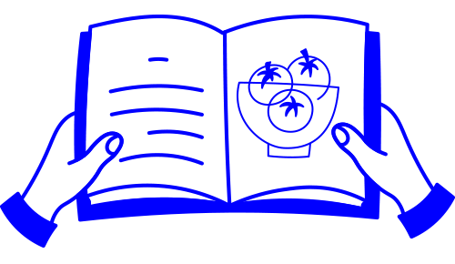

Rome
by Katie Parla
Release Date:
November 14, 2025


Welcome to Cook the Books – the cookbook discovery service for curious and creative cooks. Whether you’re still learning to chop an onion without crying or you’ve already mastered the art of the perfect sourdough loaf, there’s a little something for everyone here. Come discover new and upcoming cookbook titles with us, browse our monthly recommendations, and even find the perfect playlist to cook along to – after all, cooking should be fun!
Want to know more about Cook the Books? Make sure to head on over to our About page to learn more!
When the weather outside is dreary, we like to slow things down and keep things cozy, especially in the kitchen. We think slow-roasting meats and steaming pots of soup call for Nina Simone's earthy vocals and Nick Drake's quiet, mournful melodies. If you agree, this month's playlist is full of songs to keep you company on those long, unhurried afternoons in the kitchen.